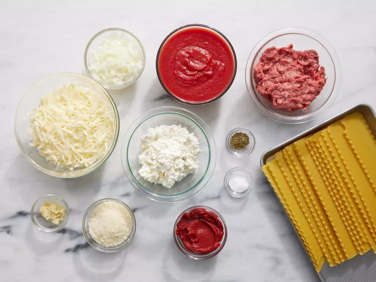
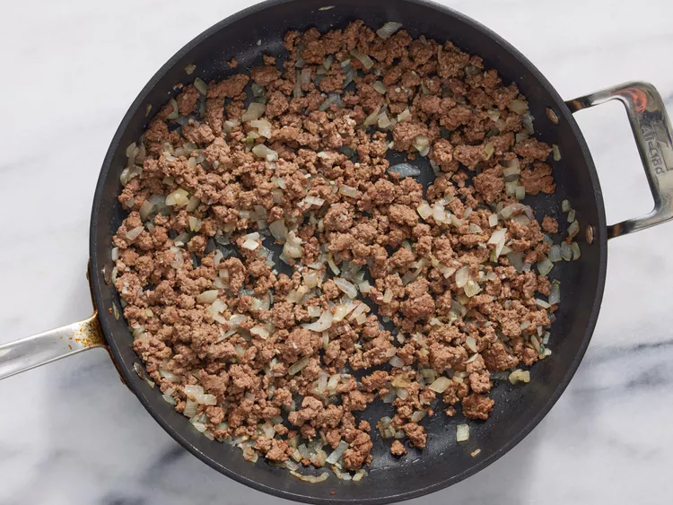
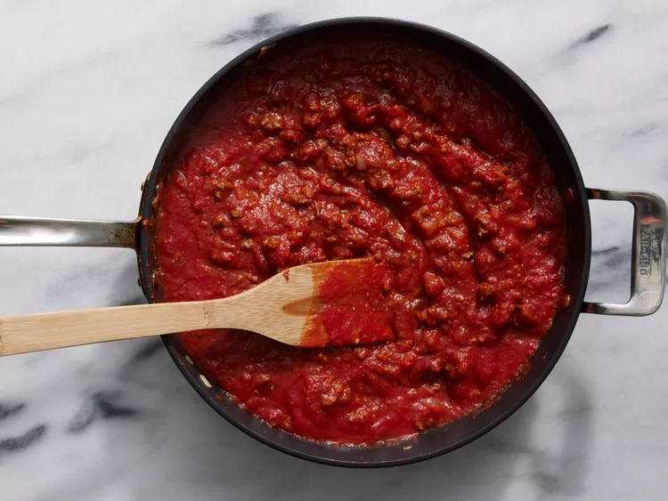
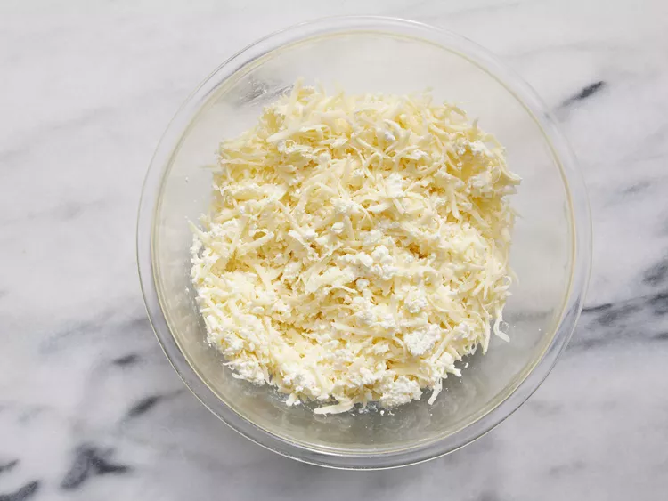
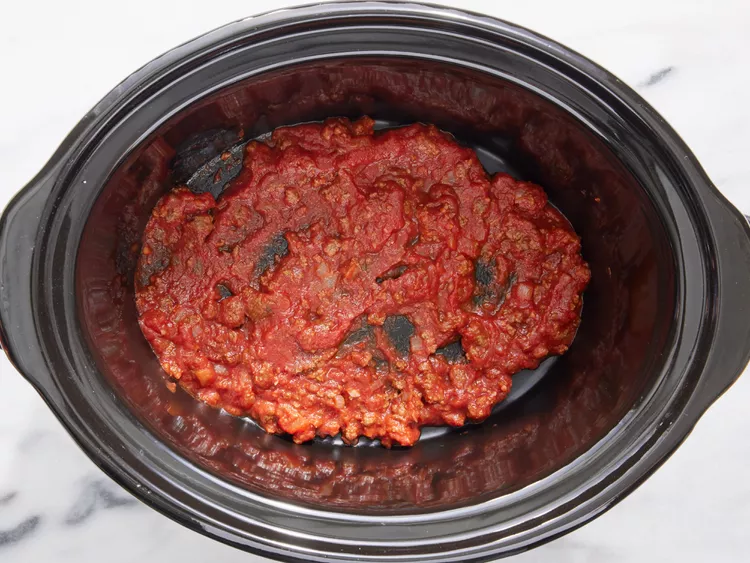
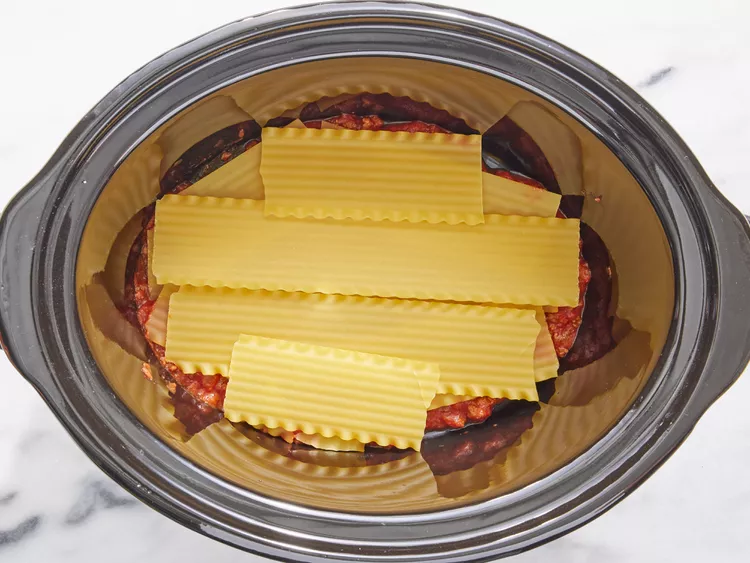
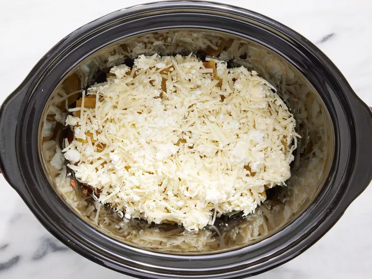
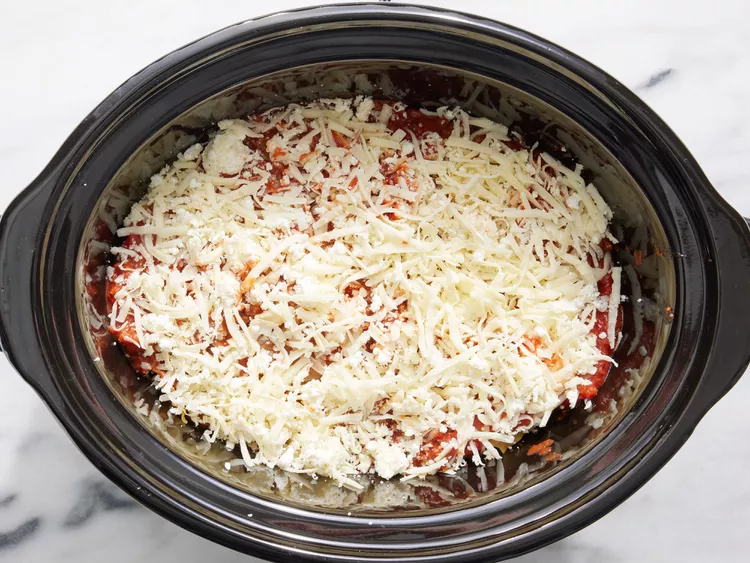
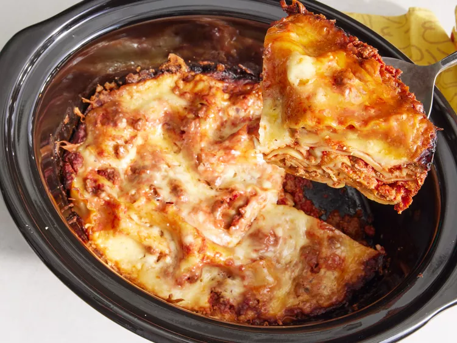

This lasagna recipe is so easy, you wont stop making it and think that you missed something.
Step 1
Gather all the ingriedients
Step 2
Get a large skillet and place the ground beef, chopped onions and garlic over in medium heat until the meat is browned and well cooked.
Step 3
Add tomate sauce, tomato paste, salt, and oregano and stir until well combined and heated through.
Step 4
Stir mozzarella, cottage cheese, and Parmesan togehter in a large bowl.
Step 5
Spoon a layer of the meat mixture onto the bottom of a slow cooker.
Step 6
Add a double layer of uncooked lasagna noodles, breaking noodles to fit into cooker as needed.
Step 7
Top noodles with a portion of cheese mixture
Step 8
Repeat the layering of sauce, noodles, and cheese until all the ingriedients are used.
Step 9
Cover and cook on Low for about 6 hours until noodles are tender; After that you are ready to enjoy some delicous lasgana!
Go Back